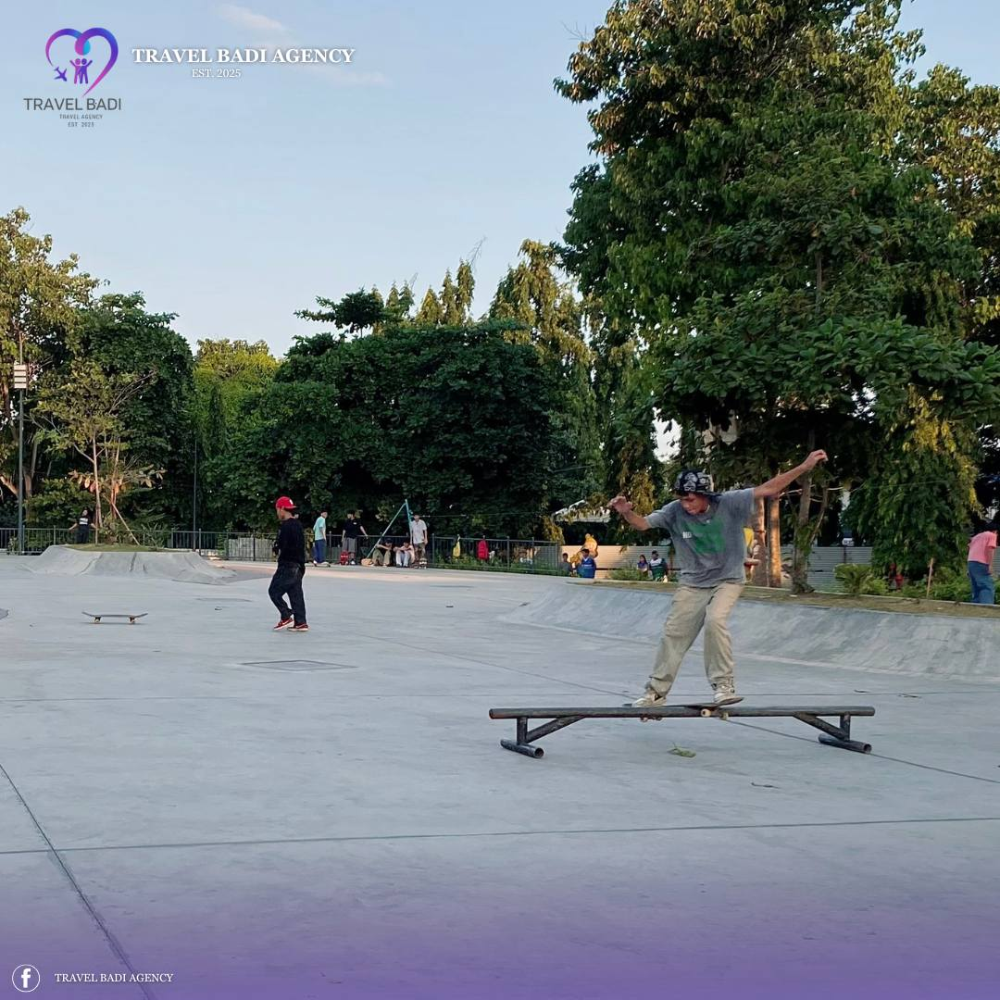
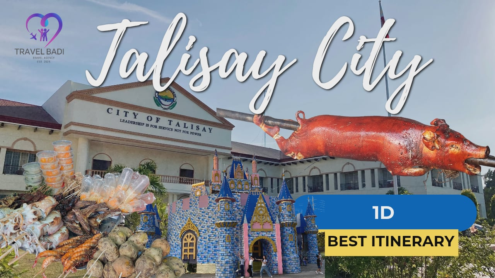
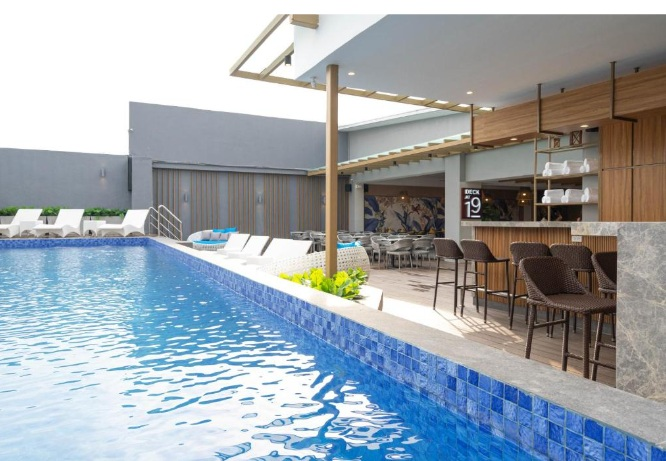
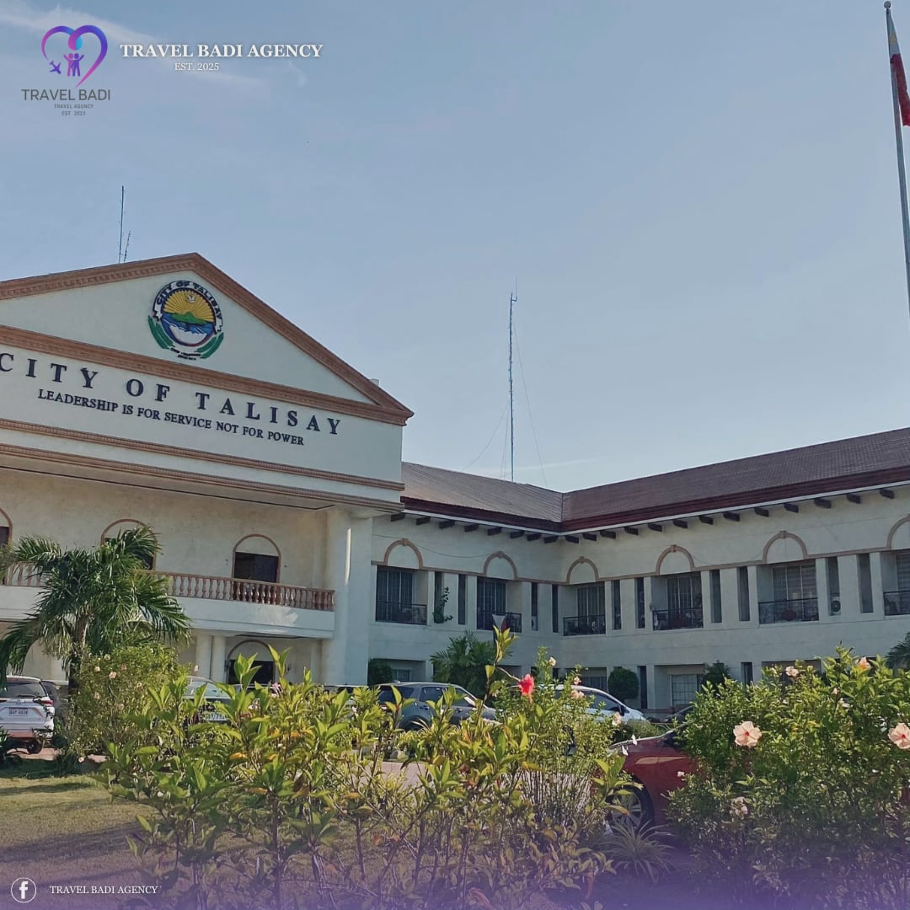
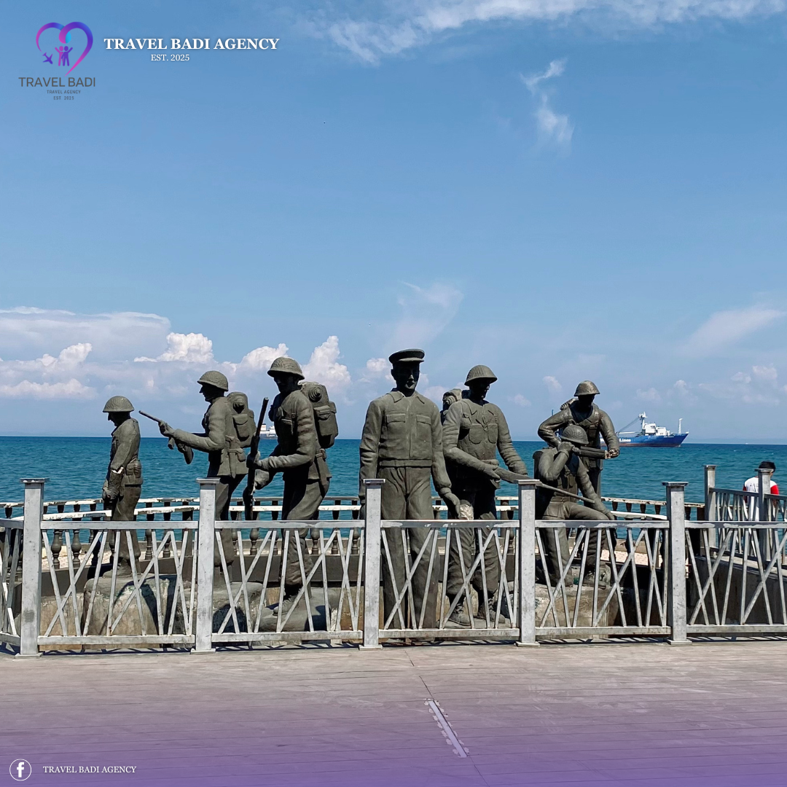
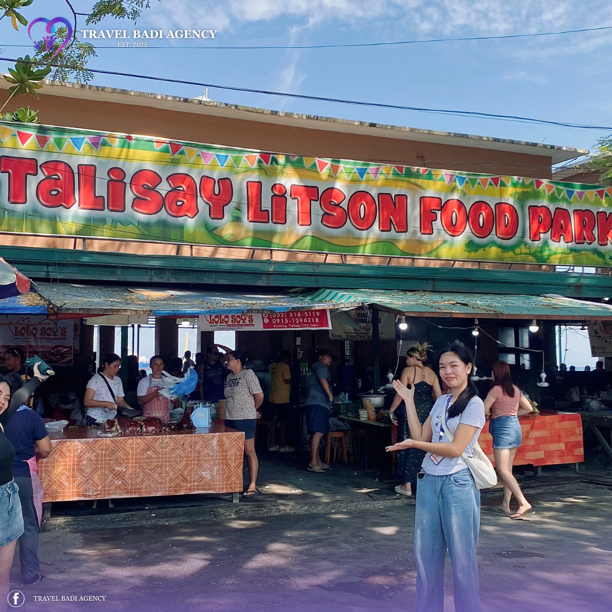
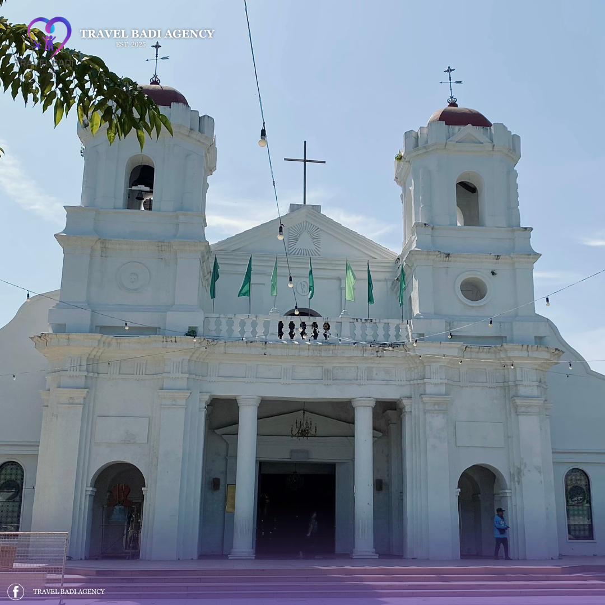
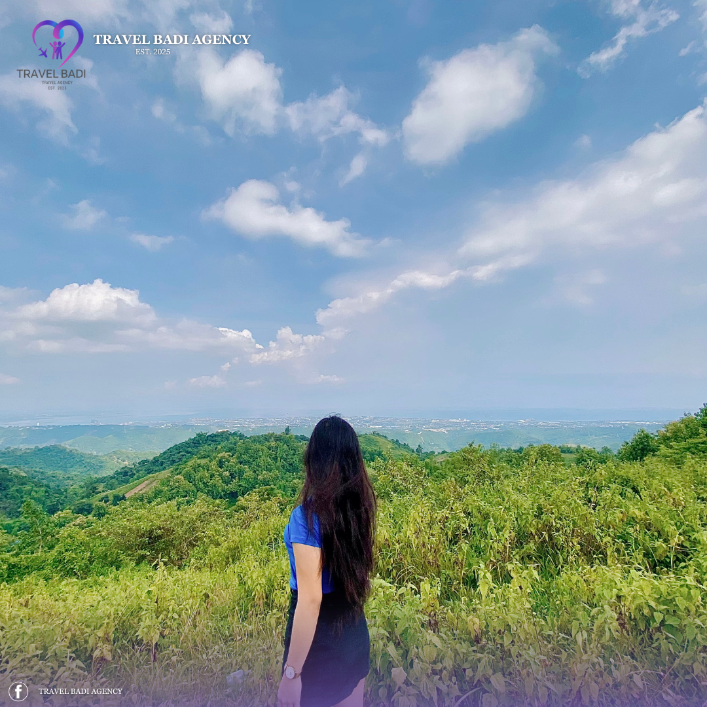
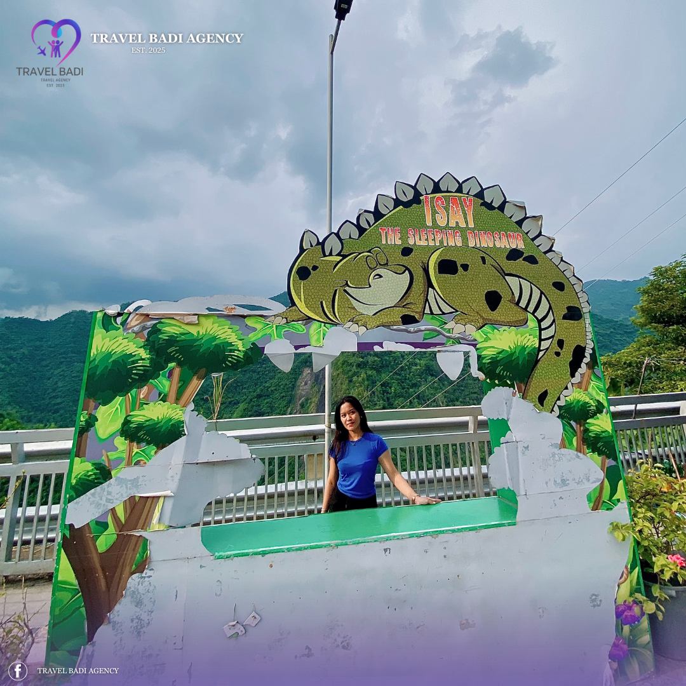

Your Trusted Travel Buddies

Passionate. Experienced. Unforgettable.
At Travel Badi, we're more than just guides; we're your companions on the road. Founded on the idea that travel is best shared, we are dedicated to creating personal, memorable, and joyful experiences. We handle the details so you can focus on making memories.
Join us to explore the world not just as a tourist, but as part of the Travel Badi family.
Explore Our Tours

Package Tour
Experience the beauty, culture, and adventure that make every trip unforgettable.
View Details

Accommodation
Stay in comfort and style with our curated selection of partner hotels and resorts.
View Details

Talisay City
A journey through the rich history and culture of the Queen City of the South.
View DetailsMoments From Our Adventures









What Our Buddies Say
Start Your Journey Here
Contact Information
Have questions or ready to book your next adventure? Reach out to us!
- +63 912 345 6789
- +123-456-7890
- travelbadiagency@gmail.com
- Leon Kilat St., Cebu City, Philippines